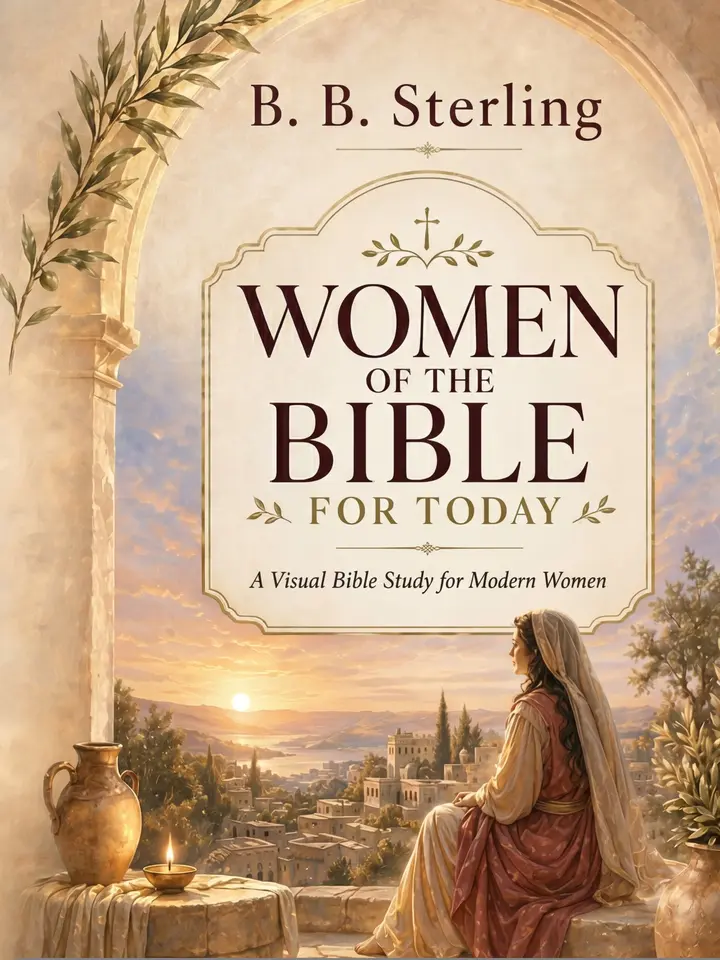

Rich visual storytelling
Illustrations, timelines, story maps and infographics make each woman’s world vivid and memorable.
Visual Bible study · For women
Meet 12 women of Scripture through a beautifully illustrated study of waiting, identity, grief, surrender, purpose and hope—created to speak into the life you are living now.
Available now on Amazon.

More than a traditional Bible study, this visual devotional pairs biblical context with thoughtful reflection, prayer and encouragement for the experiences women face today.
Illustrations, timelines, story maps and infographics make each woman’s world vivid and memorable.
Explore identity, courage, grief, waiting, surrender and calling without reducing complex lives to simple lessons.
Guided questions and prayers help turn the stories of Scripture into meaningful personal practice.
Beautiful to read. Meaningful to give.
Designed for personal devotion, reflective reading, women’s groups and gifting to someone entering a new season of life.
“The women of Scripture are not distant figures. Their questions still live beside ours.”
Women of the Bible for Today
Open a visual Bible study created to be read slowly, reflected on deeply and returned to often.
View on Amazon ↗